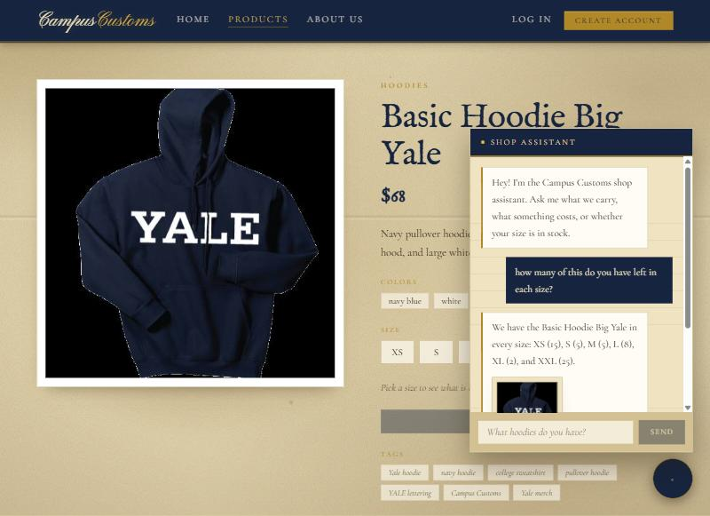
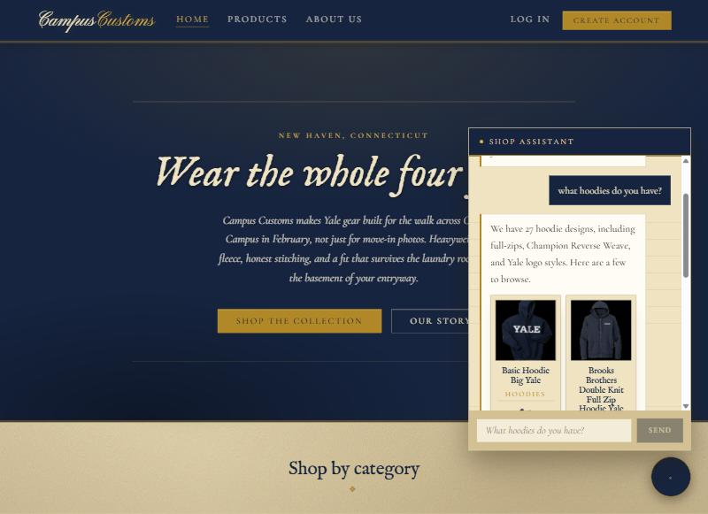
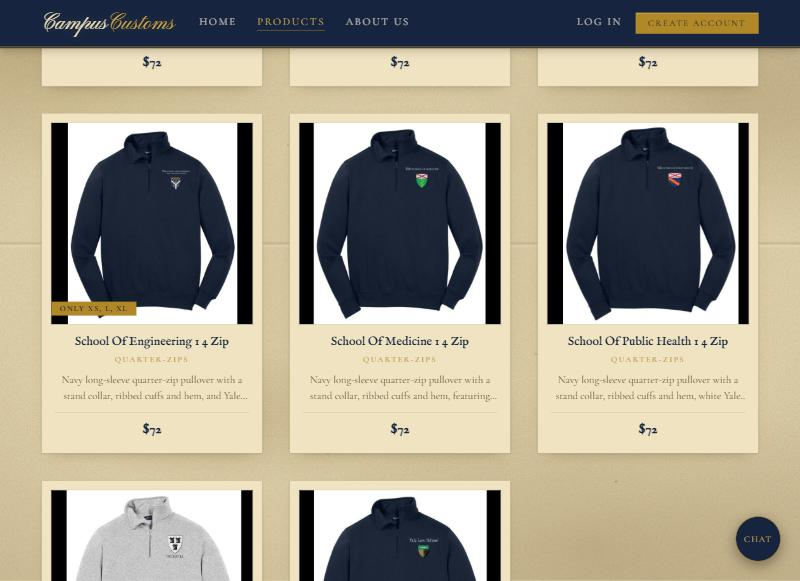

Problem 11 · Site testing
Three checks against the running site, each screenshot taken from the live
app with the FastAPI backend reading data/campus_customs.db.
Asked on the Basic Hoodie Big Yale product page: “how many of this do you have left in each size?”

The assistant answers “XS (15), S (5), M (5), L (8), XL (2), XXL (25)”.
Two things are being proved at once. The numbers come from a
check_stock tool call against the inventory table —
they are not invented. And the question never names the product: the shopper
says “this”, and the assistant resolves it from the product page they are on.
SELECT size, quantity FROM inventory
WHERE product_id = 'basic-hoodie-big-yale' returns XS 15, S 5, M 5,
L 8, XL 2, XXL 25. Every figure on screen matches.
Asked from the home page: “what hoodies do you have?”

The assistant searched the catalogue and the matching products appeared
underneath the reply as clickable cards with image, name, category and price.
These are the same ProductCard component the Products
grid uses, so clicking one opens the normal product page with its size
selector and live stock.
garment_type column would have
found only 5 — it stores 22 different spellings for about six real
categories, and the backend normalizes them before counting.
Browsing the Quarter-Zips category.

The School Of Engineering ¼ Zip carries a gold
“Only XS, L, XL” badge; the two beside it carry none,
because they are fully stocked. Before this, availability only appeared on
the product detail page — a shopper who wears medium had to open an item,
discover their size was gone, and go back. The badge is drawn from the live
inventory table and only appears when three or fewer sizes
remain, so it always means something.
school-of-engineering-1-4-zip:
| Size | XS | S | M | L | XL | XXL |
|---|---|---|---|---|---|---|
| Qty | 25 | 0 | 0 | 25 | 25 | 0 |